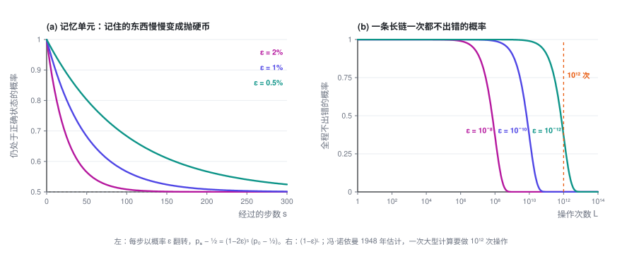
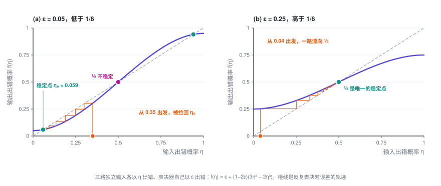
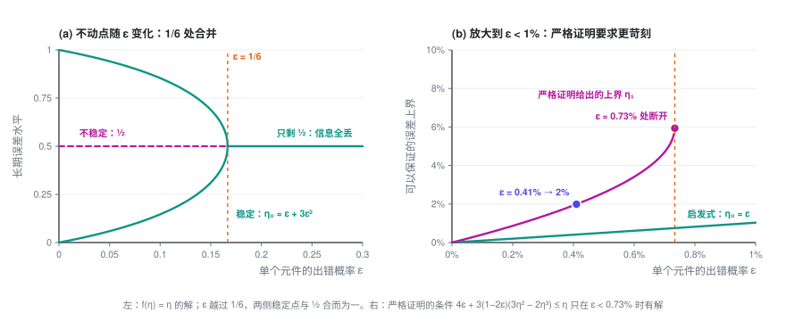
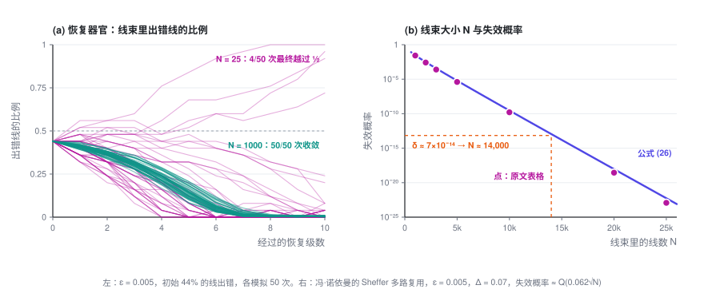
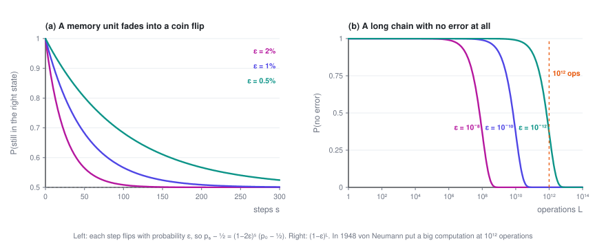
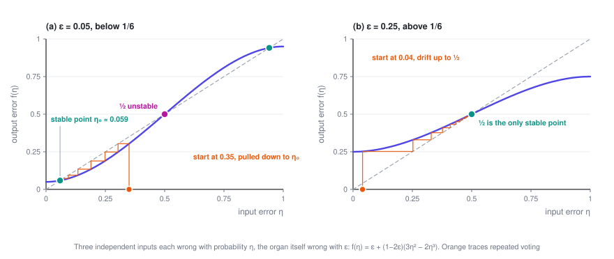
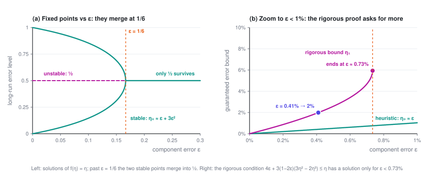
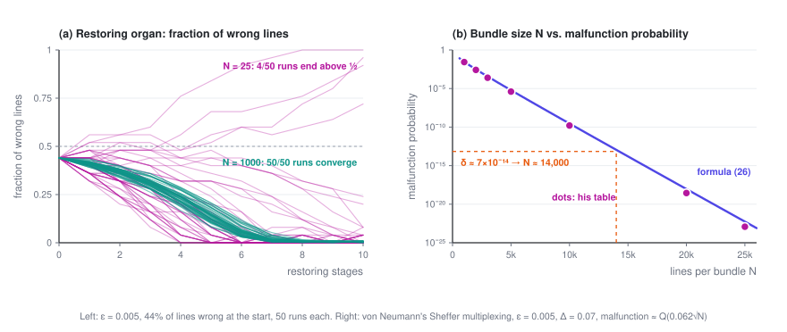

冯·诺依曼 1952：多数表决、阈值与多路复用
每个元件都会出错，能不能用它们搭出一台几乎不出错的机器？冯·诺依曼的回答是：能，但有两个前提。单个元件的出错率要低于一道门槛，各处的错误还要互相独立。这一篇沿着他 1952 年的讲稿，把这个回答从头推一遍。
可靠性专题 · 第 1 篇 / 共 2 篇 · 阅读约 18 分钟
← 已是第一篇 · 专题目录 · 多加几道检查，为什么不够 →
这是「用不可靠的模型，搭可靠的系统」的第一篇。这一篇里没有大模型，主角是电子管、继电器和神经元。只需要一点概率基础：独立事件的乘法，和二项分布。
本篇会用到的符号
| 符号 | 含义 |
|---|---|
| \varepsilon | 单个元件每次操作出错的概率 |
| p_s | 记忆单元经过 s 步后仍处于正确状态的概率 |
| \eta | 一条线上信号出错概率的上界 |
| f_\varepsilon(\eta) | 多数表决器的误差映射：输入出错 \eta 时，输出出错多少 |
| \eta_0 | 反复表决之后，误差稳定下来的水平 |
| \mu | 逻辑深度：从输入到输出，最长的一串元件有多少个 |
| N,\ \Delta | 一束线里有多少根线；读一束线时用的判定阈值 |
| \delta | 允许整台机器最终出错的概率 |
专题的整体介绍见专题目录。
1. 问题从哪来
1948 年 9 月，冯·诺依曼在帕萨迪纳的 Hixon 研讨会上作了一场报告。那是一次讨论大脑与行为的会议，他开场就说自己对在座多数领域是个外行，然后讲起了自动机，把计算机和神经系统放在一起对照。
报告中间，他算了一笔账。元件每做一次操作，失败的概率很小，但不是零；操作链一长，这些小概率累积起来就会接近 1，机器等于完全不可靠。一台高速计算机解一道典型的题，可能要做 10^{12} 次操作，所以单次操作的出错率必须远低于 10^{-12}。而在当时，一只电话继电器出错率 10^{-8} 算合格，10^{-9} 就算优秀了。
他由此断言，自动机的逻辑必须把「推理链」（chains of reasoning）的实际长度考虑进去，还要允许每一步以很小的概率出错。这件事「需要一个不平凡的理论」。
三年多以后，他自己给出了这个理论。1952 年 1 月，他在加州理工连讲五次，R. S. Pierce 做了笔记；1956 年，讲稿以 Probabilistic Logics and the Synthesis of Reliable Organisms from Unreliable Components 为题，收进香农（C. E. Shannon）和麦卡锡（J. McCarthy）主编的《Automata Studies》。
前言里有一句话，定下了全文的基调：错误不该被看成过程之外的偶然事故，它就是过程本身的一部分；在自动机的设计里，它和「正确的逻辑结构」同样重要。
他要回答的问题，可以写成一句话：
给定一种每次操作以概率 ε 出错的元件，能不能搭出一台机器，让它最终出错的概率不超过任意指定的 δ？δ 最小能到多少？
展开：出处的时间线
| 时间 | 事件 |
|---|---|
| 1948 年 9 月 20 日 | 在 Hixon 研讨会（帕萨迪纳）报告 The General and Logical Theory of Automata，1951 年收入会议文集。问题第一次被提出 |
| 1951 年 | 在伊利诺伊大学与 K. A. Brueckner、M. Gell-Mann 讨论，论文前言致谢说这些讨论给了他重要的启发 |
| 1952 年 1 月 4–15 日 | 加州理工五次讲座，R. S. Pierce 记笔记 |
| 1956 年 | 正式发表于《Automata Studies》（Annals of Mathematics Studies 第 34 册），第 43–98 页 |
讲稿的原始打字稿存于加州理工。2010 年 Michael Godfrey 据此重新排印了一版，并指出正式出版的版本在插图上有几处错误。下文提到的节号，都是原文的节号。
2. 放着不管，会怎样
先写下他的错误模型（§7.1）：每个元件每次操作以概率 ε 出错，而且与网络所处的状态、与别处的故障都统计独立。不妨设 \varepsilon < 1/2，因为一个多数时候都出错的元件，把输出取反就是一个好元件。
最简单的例子是记忆单元：它被触发一次之后，应当一直保持激发。设它每一步以概率 ε 翻转，p_s 是 s 步之后仍处于正确状态的概率，那么
两边同时减去 ½，得到
p_s - \tfrac12 衡量的是这个单元还记得多少。它按指数衰减，p_s 最终趋于 ½：存进去的东西变成了抛硬币。ε = 0.5% 时，大约 70 步就忘掉一半。
冯·诺依曼特别强调，错误的麻烦不在于得到错误的结果，而在于得到无关的结果：输出和输入不再有任何关系。

他还指出了一个看上去绕不过去的限制（§7.3）：机器的每个输出，都出自最后那一个元件，整台机器不可能比这个元件更可靠。所以，只要信号是在单根线上传的，最终出错率 δ 就不可能低于 ε。
这个限制后来被绕过去了。不过在那之前，得先有一个能纠错的部件。
3. 多数表决：什么时候能纠错
他选的纠错部件是多数表决器（majority organ）：三个输入，输出其中占多数的那个值。它也是用同样的元件做的，自己也以概率 ε 出错。
设三路输入出错的概率分别不超过 \eta_1, \eta_2, \eta_3。输出出错的概率，有两种估计（§8.2）。
一般情形。 什么都不假设，就只能把各种出错的可能加起来：
每一路都不超过 η 时，这个界是 \varepsilon + 3\eta，比 η 还大。也就是说，信号每经过一个元件，误差只会变大，机器一深就谈不上精度。
特殊情形。 如果下面两个条件同时成立：
- 三路输入各自独立地出错；
- 正常工作时，三路输入本该相同。
那么只有至少两路同时出错，表决才会出错。每路出错概率不超过 η 时，这件事的概率是 3\eta^2(1-\eta) + \eta^3 = 3\eta^2 - 2\eta^3。再算上表决器自己以 ε 把结果弄反，输出出错的概率为
η 小的时候，它约等于 \varepsilon + 3\eta^2，可以比 η 小。表决确实能纠错，但前提是这两个条件都成立。 冯·诺依曼接下来的所有构造，都是在想办法让每一个表决器都处在这个特殊情形里。
最直接的办法是三重化：把原来的网络复制三份，喂给它们同样的输入，每个输出后面接一个多数表决器。三份副本各自独立地出错，结果又本该一致，两个条件正好满足。于是输出出错概率的上界，从 η 变成了 f_\varepsilon(\eta)。
4. 1/6：一条分界线
三重化可以一层套一层地做。所以真正要问的是：反复作用 \eta \to f_\varepsilon(\eta)，误差最后会停在哪里？
先找不动点，也就是 f_\varepsilon(\eta) = \eta 的解。\eta = \tfrac12 总是一个。把因子 \eta - \tfrac12 提出来，剩下的部分是
根号里的数非负，当且仅当 \varepsilon \le 1/6。于是分成两种情况。
\varepsilon < 1/6 时，有三个不动点 \eta_0 < \tfrac12 < 1-\eta_0。只要初始误差低于 ½，反复表决就会把它拉到
\varepsilon \ge 1/6 时，只剩 ½ 这一个不动点。不管初始误差多小，反复表决都会把它推向 ½，信息全部丢失，和上一节的记忆单元一样。
分界点也可以一行算出来。在 ½ 处，映射的斜率是 f_\varepsilon'(\tfrac12) = \tfrac32(1-2\varepsilon)。斜率大于 1，½ 就是个排斥点，误差会离开它，跑向 \eta_0；斜率小于 1，½ 就把一切都吸过去。斜率恰好等于 1 的地方，正是 \varepsilon = 1/6。

这个结果有两层意思：
- 误差有底。 稳定点 \eta_0 \approx \varepsilon，表决最多把误差压到和元件本身差不多的水平，不会更低，这就是第 2 节 δ ≥ ε 的限制。但它挡住了 (1-\varepsilon)^L 那样的雪崩，误差不再随深度增长。
- 有一道门槛。 元件太差（ε ≥ 1/6，约 16.7%）时，叠多少层表决都没用。门槛两边是截然不同的两种局面：一边误差能稳住，另一边一切归于噪声。
5. 严格证明的代价：0.73% 与 3^\mu
上面的推理是启发式的。要严格证明（§8.3.2），冯·诺依曼对网络的逻辑深度 μ 做归纳。麻烦在于，他的构造里总有一部分表决器，输入并不处在特殊情形，只能用一般情形的界 \varepsilon + 3\eta。
把这部分也算进去，归纳要成立，就需要对某个小于 ½ 的 η 满足
算下来，这个不等式只在 \varepsilon < 0.0073 时有解，能保证的最小误差约为 4\varepsilon + 152\varepsilon^2。比如要把最终误差控制在 2%，元件的出错率就得低于 0.41%。

冯·诺依曼说，0.73% 这个数没有绝对的意义，构造改进一下还可以放宽；1/6 却是硬的，一旦超过它，哪怕在最有利的情形下，表决也改善不了误差。
真正要命的是成本。深度每加一层，元件数就乘以 3，整台机器需要原来 3^\mu 倍的元件。他算了一下：逻辑深度 160 对一次普通计算来说并不算深，可 3^{160} \approx 2 \times 10^{76}，已经超过了人们估计的宇宙电子总数；深度再加 25% 到 200，还要再乘上 1.2 \times 10^{19}。他对此只写了一句：无需多言。
单线的方案回答了「能不能」，却造不出来。
6. 多路复用：不要求每根线都对
出路在 §7.4 的「多线技巧」：每个信号不再用一根线传，而是用一束 N 根线同时传。再取一个判定阈值 Δ（0 < Δ < ½）：一束里至少有 (1-\Delta)N 根被激发，就读作 1；至多 \Delta N 根被激发，就读作 0；介于两者之间，算作机器出了故障。
这样一来，δ ≥ ε 的限制就不成立了。单根线仍然以 ε 左右的概率出错，但一束线只有在出错的线超过 ΔN 根时才算错。
在线束上做运算，需要两类部件。
执行器官（executive organ）负责逻辑运算本身，比如把三束线逐根配对，送进 N 个多数表决器。问题出在「二对一」的时候，也就是两束输入压过第三束：输出束里出错线的比例，可能接近这两束的出错比例之和。运算一级级做下去，线束就会滑进中间的故障区。
恢复器官（restoring organ）负责把退化的线束拉回来。做法是（§9.2.3）：把一束线的每根都一分为三，经过一个随机置换 U 打乱，再每三根送进一个多数表决器。如果输入束里有比例为 α 的线被激发，那么一个表决器收到至少两根激发线的概率是
这和第 3 节是同一个三次式，只不过现在作用在一束线的比例上。它把 α 往离它更近的 0 或 1 推：比例离两端 21.2% 时推得最狠，一次能拉回 9.6 个百分点。再算上表决器自身的出错，出错线比例的变化就服从 f_\varepsilon。
随机置换是整个构造的关键。 置换之前，每三根线都是同一根线分出来的，状态完全一样；而 3\alpha^2 - 2\alpha^3 这个公式，要求进入同一个表决器的三根线相互独立。冯·诺依曼说得很直接：这种随机性必须始终保持。他在 §11.2 又补了一个反面例子：网络有反馈时，如果不打乱，脉冲会回到它出发的那个器官，错误之间出现强相关，机器会「记住自己的错误，并一直延续下去」。
那么，线束为什么能突破 δ ≥ ε？看一束线里出错线的比例。N 根线大致独立地出错，这个比例的涨落约为 1/\sqrt N。线束失效，要求这个比例偶然涨过 Δ，这是个大偏差事件，概率随 N 指数下降。

冯·诺依曼为一套完全用 Sheffer 元件（与非门）搭的方案算了具体数字（§10.5）。判定阈值取 Δ = 0.07 时，元件出错率必须低于 1.07%，否则线束再粗，失效概率也降不到某个正数以下。取 ε = 0.005，一束线失效的概率约为
由此可以算出 \varrho \sim e^{-0.0019N}：N 每多约 1,200 根，失效概率就降一个数量级。他的表里，N = 1,000 时失效概率约 2.7%，N = 10,000 时约 1.6 \times 10^{-10}，N = 20,000 时约 2.8 \times 10^{-19}。
接着他举了两个例子（§10.5.3）。
一台电子管计算机。 2,500 只电子管，平均每 5 微秒动作一次，要求平均 8 小时才出一次错。8 小时里共有约 1.4 \times 10^{13} 次动作，所以每次动作允许的出错概率 δ ≈ 7 \times 10^{-14}，查表得 N ≈ 14,000。N 再加 25%，可靠性提高约 1,600 倍。
人的神经系统。 按 10^{13} 个基本单元、每秒动作 10 次、一万年才允许出一次严重错误来估，N 在 19,000 到 28,000 之间，取决于具体的假设。
他的结论是：只要要求足够严，N 对具体要求很不敏感，大约都在两万上下。
代价是线数乘以 N，元件数乘以约 3N。N ≈ 20,000 对当时的电子管技术不现实，但对神经元这样微小的元件并不离谱。更要紧的是增长方式：N 只随机器规模和精度要求缓慢增长，而单线方案要乘的是 3^\mu。
7. 他搁置的那个假设
回到第 2 节的错误模型。冯·诺依曼写下「各处的错误相互独立」之后，紧接着提到另一种假设：故障与网络的状态有关，彼此之间也相关，他说这种假设「要现实得多」。然后他写道，这里先采用前一种，更窄、也更简单的假设。
到了 §11.3，他又回到这个问题：把每个元件的出错概率当成一个与时间、与此前输入都无关的常数 ε，「是不现实的」。出错率可能随输入组合而变，随历史漂移，也因元件而异。对这种情况的分析，「这里不做尝试」。
把全文连起来看，独立性是整座建筑的地基：
- 第 3 节的多数表决，只有在三路输入各自独立地出错时，才能把 η 压成 3\eta^2 量级；
- 第 6 节的恢复器官，要靠随机置换去制造独立性；
- 线束的失效概率随 N 指数下降，同样依赖 N 根线大致独立地出错。
有独立性，冗余就能换来任意高的可靠性，代价只是常数倍的元件。没有独立性，这些结论一个也拿不到。
七十多年后，搭 AI 系统的人面对的是同一个问题：每次调用模型都可能出错，而我们想要一个几乎不出错的系统。多采样几次再投票，就是多数表决；让另一次调用来检查结果，就是恢复器官；agent 一步接一步地执行，就是冯·诺依曼说的推理链。不同的是，同一个模型面对同一道题，常常错在同一个地方。错误并不独立。
这恰好是他搁置的那种情况。专题目录里有一张完整的对照表；第 2 篇讨论，错误相关时，为什么多加几道检查就不够了，内容基于我 2026 年的一篇论文（参考文献 3）。
参考文献
- John von Neumann. Probabilistic Logics and the Synthesis of Reliable Organisms from Unreliable Components. In C. E. Shannon, J. McCarthy (eds.), Automata Studies, Annals of Mathematics Studies 34, pp. 43–98. Princeton University Press, 1956.（链接为据 1952 年加州理工讲稿重新排印的版本）
- John von Neumann. The General and Logical Theory of Automata. In L. A. Jeffress (ed.), Cerebral Mechanisms in Behavior: The Hixon Symposium, pp. 1–41. Wiley, 1951.
- Jiangang Han. Partially Correlated Verifier Cascades in LLM Harnesses: Concave Log-Odds, Polynomial Reliability, and Blind-Spot Ceilings. arXiv:2607.13918, 2026.
可靠性专题 · 第 1 篇 / 共 2 篇
← 已是第一篇 · 专题目录 · 多加几道检查，为什么不够 →
Von Neumann, 1952: Majority Voting, Thresholds, and Multiplexing
Can you build a machine that almost never fails out of parts that fail all the time? Von Neumann's answer was yes, on two conditions: each part's error rate has to stay below a threshold, and failures in different places have to be independent. This post follows his 1952 lectures and works through that answer from the beginning.
Reliability · Part 1 of 2 · 18 min read
← First part · Series index · Why More Checks Stop Helping →
This is the first post in Reliable Systems from Unreliable Models. There are no language models in it; the cast is vacuum tubes, relays and neurons. All you need is basic probability: multiplying independent events, and the binomial distribution.
Symbols used in this post
| Symbol | Meaning |
|---|---|
| \varepsilon | Probability that a single component fails on one operation |
| p_s | Probability that a memory unit is still in the right state after s steps |
| \eta | Upper bound on the probability that a line carries the wrong signal |
| f_\varepsilon(\eta) | Error map of a majority organ: how often the output is wrong when each input is wrong with probability \eta |
| \eta_0 | The error level that repeated voting settles at |
| \mu | Logical depth: the longest chain of components from input to output |
| N,\ \Delta | Number of lines in a bundle; the threshold used to read a bundle |
| \delta | The probability of a wrong final result that we're willing to accept |
The overview of the series is in the series index.
1. Where the question came from
In September 1948, von Neumann gave a talk at the Hixon Symposium in Pasadena, a meeting about the brain and behavior. He opened by admitting he was an outsider to most of the fields in the room, then spoke about automata, holding computing machines up against the nervous system.
Partway through, he did some arithmetic. Every component has a small but non-zero chance of failing each time it operates. Make the chain of operations long enough and those small chances add up to something near certainty, which amounts to what he called "complete unreliability". A fast computer working a typical problem might carry out 10^{12} operations, so the error rate per operation has to be well below 10^{-12}. For comparison, a telephone relay back then was considered acceptable at about 10^{-8} and excellent at 10^{-9}.
The logic of automata, he concluded, would have to reckon with "the actual length of 'chains of reasoning'", and allow every operation to fail with some small probability. "An exhaustive study and a nontrivial theory will, therefore, certainly be called for."
A little over three years later he supplied the theory himself. In January 1952 he gave five lectures at Caltech, with notes taken by R. S. Pierce, and in 1956 they appeared as Probabilistic Logics and the Synthesis of Reliable Organisms from Unreliable Components in Automata Studies, edited by Claude Shannon and John McCarthy.
The introduction sets the tone. Error, he writes, should be viewed "not as an extraneous and misdirected or misdirecting accident, but as an essential part of the process under consideration", as important to the design of automata as the intended logical structure itself.
The question he set out to answer fits in one sentence:
Given a component that fails with probability ε on each operation, can you build a machine whose final result is wrong with probability no more than any δ you name? And how small can δ be?
Show: timeline of the sources
| When | What |
|---|---|
| September 20, 1948 | Talk at the Hixon Symposium in Pasadena, The General and Logical Theory of Automata, published in the proceedings in 1951. The question is raised for the first time |
| 1951 | Discussions at the University of Illinois with K. A. Brueckner and M. Gell-Mann, which the paper's introduction credits with "some important stimuli" |
| January 4–15, 1952 | Five lectures at Caltech, notes by R. S. Pierce |
| 1956 | Published in Automata Studies (Annals of Mathematics Studies 34), pp. 43–98 |
The original typescript is held at Caltech. In 2010 Michael Godfrey re-typeset it and listed several figure errors that crept into the published version. Section numbers in this post refer to the paper.
2. What happens if you do nothing
Start with his error model (§7.1): each component fails on each operation with probability ε, independently of the state of the network and of every other failure. We can assume \varepsilon < 1/2, because a component that's wrong most of the time becomes a good one if you invert its output.
The simplest example is a memory unit, which is supposed to stay excited once it has been triggered. Say it flips with probability ε at every step, and let p_s be the probability that it's still in the right state after s steps. Then
Subtracting ½ from both sides gives
The gap p_s - \tfrac12 measures how much the unit still remembers. It shrinks exponentially and p_s drifts to ½, so whatever was stored ends up as a coin flip. At ε = 0.5%, half of it is gone in about 70 steps.
Von Neumann was precise about what the damage is. The problem with error "is not so much that incorrect information will be obtained, but rather that irrelevant results will be produced." The output simply stops depending on the input.

He also pointed out what looks like a hard limit (§7.3). Every output of a machine comes out of one final component, and the machine can't be more reliable than that component. So as long as signals travel on single lines, the final error δ can never be smaller than ε.
As we'll see, there is a way around this. First, though, we need a part that corrects errors.
3. Majority voting, and when it works
The part he chose is the majority organ: it takes three inputs and outputs whichever value most of them carry. It's built from the same unreliable components, so it also fails with probability ε.
Suppose the three inputs are wrong with probability at most \eta_1, \eta_2, \eta_3. There are two ways to bound how often the output is wrong (§8.2).
The general case. With no further assumptions, all you can do is add up everything that could go wrong:
If each \eta_i is at most η, the bound is \varepsilon + 3\eta, which is larger than η. Every component a signal passes through makes the error worse, and a deep enough machine has no accuracy left.
The special case. Now suppose two things are true:
- the three inputs fail independently of one another, and
- when everything is working, the three inputs should agree.
Then the vote is wrong only when at least two inputs are wrong at the same time. With each input wrong with probability at most η, that happens with probability 3\eta^2(1-\eta) + \eta^3 = 3\eta^2 - 2\eta^3. Add the chance ε that the organ itself flips the result, and the output is wrong with probability
When η is small this is about \varepsilon + 3\eta^2, which can be smaller than η. Voting does correct errors, but only when both conditions hold. Everything von Neumann builds from here on is a way of keeping every majority organ in this special case.
The most direct way is triplication: make three copies of a network, give them the same inputs, and put a majority organ on each of their outputs. The copies fail independently and ought to agree, so both conditions are met, and the bound on the output error drops from η to f_\varepsilon(\eta).
4. One-sixth: a dividing line
Triplication can be nested, one layer inside another. So the real question is where the error ends up if you apply \eta \to f_\varepsilon(\eta) over and over.
Start with the fixed points, where f_\varepsilon(\eta) = \eta. One of them is always \eta = \tfrac12. Factoring out \eta - \tfrac12 leaves
The square root is real exactly when \varepsilon \le 1/6, and that splits the picture in two.
When \varepsilon < 1/6, there are three fixed points, \eta_0 < \tfrac12 < 1-\eta_0. As long as the error starts below ½, repeated voting pulls it down to
When \varepsilon \ge 1/6, ½ is the only fixed point left. However small the error starts, repeated voting pushes it toward ½, and all the information is lost, just as with the memory unit in Section 2.
You can also see where the dividing line falls in a single step. At ½, the map has slope f_\varepsilon'(\tfrac12) = \tfrac32(1-2\varepsilon). If the slope is greater than 1, ½ repels, and errors move away from it toward \eta_0; if it's less than 1, ½ pulls everything in. The slope is exactly 1 at \varepsilon = 1/6.

Two things follow:
- There's a floor. The stable level is \eta_0 \approx \varepsilon: voting can bring the error down to roughly the component's own error rate and no further, which is the δ ≥ ε limit from Section 2. What voting does buy you is protection from the (1-\varepsilon)^L avalanche, since the error no longer grows with depth.
- There's a threshold. If the components are too unreliable (ε ≥ 1/6, about 16.7%), no amount of voting helps. The two sides of the line behave completely differently: on one, the error holds steady; on the other, everything dissolves into noise.
5. The price of rigor: 0.73% and 3^\mu
So far the argument has been heuristic. To make it rigorous (§8.3.2), von Neumann used induction on the logical depth μ. The catch is that his construction always contains some majority organs whose inputs are not in the special case, and for those only the general bound \varepsilon + 3\eta applies.
Once those are accounted for, the induction works only if, for some η below ½,
Working it out, the inequality has a solution only when \varepsilon < 0.0073, and the smallest error it can guarantee is about 4\varepsilon + 152\varepsilon^2. To guarantee a final error of 2%, for example, components must fail less than 0.41% of the time.

Von Neumann noted that the 0.73% figure "has no absolute significance" and could be relaxed with a better construction. The 1/6, on the other hand, is essential: above it, even a majority organ in the most favorable situation can't bring the error down.
What really kills this approach is the cost. Each extra level of depth triples the number of components, so the machine needs 3^\mu times as many as before. He ran the numbers. A logical depth of 160 is not excessive for an ordinary calculation, yet 3^{160} \approx 2 \times 10^{76}, "somewhat above the putative order of the number of electrons in the universe". Going to depth 200, only 25% more, multiplies that by another 1.2 \times 10^{19}. His comment: "in view of the above this requires no comment."
Single-line error control shows that reliable machines are possible, but not in any form you could actually build.
6. Multiplexing: not every line has to be right
The way out is what §7.4 calls the multiple line trick: carry every signal on a bundle of N lines at once, instead of on a single line. Then choose a threshold Δ between 0 and ½. If at least (1-\Delta)N lines in a bundle are firing, the bundle reads as 1; if at most \Delta N are, it reads as 0; anything in between counts as a malfunction.
With bundles, the δ ≥ ε limit no longer applies. Any individual line is still wrong about ε of the time, but a bundle is wrong only when more than ΔN of its lines are.
Computing with bundles takes two kinds of parts.
Executive organs carry out the logic, for instance by matching up the lines of three bundles one by one and feeding them into N majority organs. The trouble comes when two bundles outvote a third. The output bundle's share of wrong lines can then come out close to the sum of the two deciding bundles' shares, and after enough operations a bundle drifts into the undecided zone.
Restoring organs pull a degraded bundle back into shape. The construction (§9.2.3) splits every line of the bundle into three, shuffles all of them with a random permutation U, and feeds them three at a time into N majority organs. If a fraction α of the incoming lines are firing, a given majority organ sees at least two firing inputs with probability
This is the same cubic as in Section 3, now applied to the fraction of lines in a bundle. It pushes α toward whichever end, 0 or 1, is closer, and it pushes hardest when the level sits 21.2% from an end, where a single pass moves it 9.6 percentage points back. Once the majority organs' own failures are included, the fraction of wrong lines follows f_\varepsilon.
The random permutation is what makes the whole thing work. Before the shuffle, every three lines come from splitting one line, so they're always in the same state. But the formula 3\alpha^2 - 2\alpha^3 requires the three lines entering each majority organ to be independent. Von Neumann is blunt: this randomness "must then be maintained at all times". In §11.2 he adds a cautionary case. In a network with feedback and no shuffling, pulses return to the very organ they came from, errors become strongly correlated, and "the machine remembers its mistakes, so to speak, and thereafter perpetuates them."
So how does a bundle get past δ ≥ ε? Consider the fraction of wrong lines in a bundle. If the N lines fail more or less independently, that fraction fluctuates by roughly 1/\sqrt N. For the bundle to fail, the fraction has to climb above Δ by chance. That's a large deviation, and its probability falls exponentially with N.

Von Neumann worked out concrete numbers for a complete design built entirely from Sheffer strokes, better known today as NAND gates (§10.5). With Δ = 0.07, components must fail less than 1.07% of the time; otherwise the malfunction probability stays above some fixed positive level no matter how large the bundles are. With ε = 0.005, a bundle malfunctions with probability about
From this you can work out that \varrho \sim e^{-0.0019N}: every 1,200 or so extra lines cut the malfunction probability tenfold. His table puts it at about 2.7% for N = 1,000, 1.6 \times 10^{-10} for N = 10,000, and 2.8 \times 10^{-19} for N = 20,000.
He then gave two examples (§10.5.3).
A vacuum-tube computer. Take 2,500 tubes, each switching on average once every 5 microseconds, and ask for 8 hours between errors on average. That's about 1.4 \times 10^{13} switching events, so each one may fail with probability δ ≈ 7 \times 10^{-14}, and the table calls for N ≈ 14,000. Making N 25% larger improves reliability roughly 1,600-fold.
The human nervous system. Assume 10^{13} basic units, each firing 10 times a second, and one serious error allowed every 10,000 years. Depending on the exact assumptions, N comes out between 19,000 and 28,000.
His conclusion: as long as the requirements are demanding, N hardly depends on the details, and lands at around 20,000 in every case.
The price is N times as many lines and about 3N times as many components. A factor of 20,000 was out of the question for vacuum tubes, though not absurd for components as small as neurons. What matters more is how the cost grows. N increases only slowly with the size of the machine and the accuracy required, while the single-line scheme cost a factor of 3^\mu.
7. The assumption he set aside
Go back to the error model from Section 2. Right after assuming that failures are independent, von Neumann mentions a second possibility, which he calls "a good deal more realistic": malfunctions that depend on the state of the network and on each other. Then he says he'll use the first, "narrower and simpler" assumption instead.
He comes back to this in §11.3. Treating each component's failure probability as a constant ε, unaffected by time or by earlier inputs, "is an unrealistic assumption." The failure rate might depend on which inputs are active, drift over time, and differ from one component to the next. Analyzing that situation "will not be attempted here."
Look at the paper as a whole and independence turns out to be the foundation everything rests on:
- In Section 3, majority voting shrinks η to something of order 3\eta^2 only if the three inputs fail independently.
- In Section 6, the restoring organ needs a random permutation to manufacture that independence.
- A bundle's malfunction probability falls exponentially with N only because its lines fail more or less independently.
With independence, redundancy buys as much reliability as you want for a constant factor in components. Without it, none of these results hold.
More than seventy years on, people building AI systems are facing the same problem. Any call to a model can be wrong, and we want systems that almost never are. Sampling several answers and taking a vote is a majority organ. Having another call check the answer is a restoring organ. An agent carrying out a task step by step is von Neumann's chain of reasoning. The difference is that a model tends to get a given question wrong in the same way, time after time. Its errors aren't independent.
That is precisely the case he set aside. The series index lays out the full comparison, and Part 2, based on a 2026 paper of mine (reference 3), looks at why adding more checks stops being enough once errors are correlated.
References
- John von Neumann. Probabilistic Logics and the Synthesis of Reliable Organisms from Unreliable Components. In C. E. Shannon, J. McCarthy (eds.), Automata Studies, Annals of Mathematics Studies 34, pp. 43–98. Princeton University Press, 1956. (The link is a re-typeset edition of the 1952 Caltech lecture notes.)
- John von Neumann. The General and Logical Theory of Automata. In L. A. Jeffress (ed.), Cerebral Mechanisms in Behavior: The Hixon Symposium, pp. 1–41. Wiley, 1951.
- Jiangang Han. Partially Correlated Verifier Cascades in LLM Harnesses: Concave Log-Odds, Polynomial Reliability, and Blind-Spot Ceilings. arXiv:2607.13918, 2026.
Reliability · Part 1 of 2
← First part · Series index · Why More Checks Stop Helping →